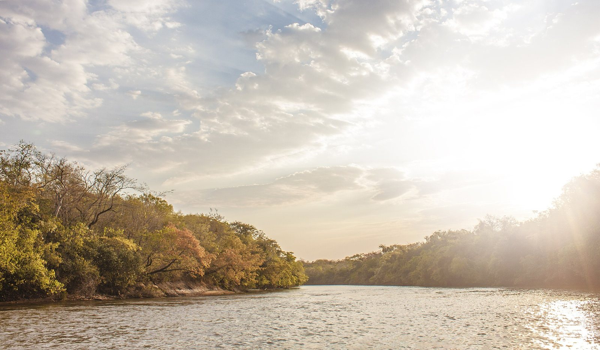

Terena
The Terena language, of the Arawak family, spoken in Mato Grosso do Sul, São Paulo and Mato Grosso. The platform starts with texts on the people, the language and their pottery, and a bibliography; the dictionary comes with the fieldwork.

On this platform
-
Enciclopédia
Texts on the Terena people, their language and pottery, from published sources (in Portuguese).
-
Bibliografia
Books, theses and articles on the Terena language and culture.